-
YAHIKO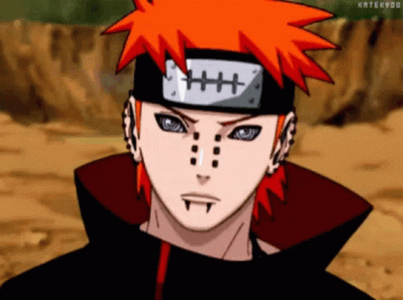
Fundador da Akatsuki original,tinha a capacidade de usar técnicas baseadas em água e podia controlar a chuva.
-
KONAN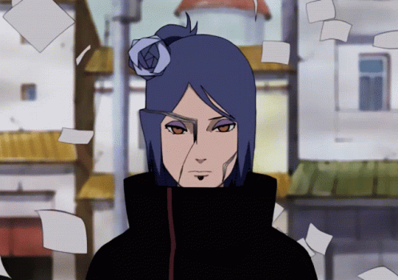
Tem um talento natural para origami, desenvolvendo técnicas diversas para as quais faz uso de papel.
-
NAGATO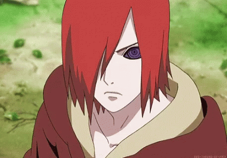
Sonhava em trazer paz ao mundo violento dos shinobi, ele possuia o Rinnegan, os olhos do Eremita dos Seis Caminhos.
-
ITACHI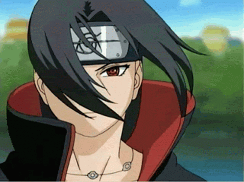
Prodígio do clã Uchiha,se tornou um criminoso internacionalmente procurado após assassinar todos os membros do seu clã, com exceção de seu irmão mais novo.
-
SASORI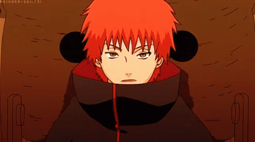
Fascinado por teatro de bonecos, tinha grande perícia em combate a longas distâncias,era capaz de controlar pessoas para viverem como um de seus fantoches, contanto que tivesse conseguido enfraquecê-las o suficiente.
-
OROCHIMARU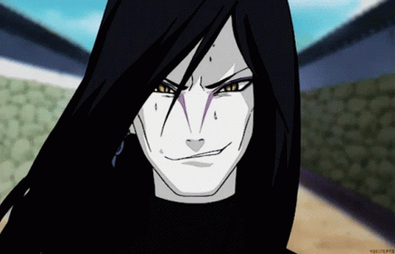
Era um dos Lendários Sannin, em busca da imortalidade oteve resistência, velocidade e força sobre-humanas,suas transformações chegaram ao extremo de ele conseguir tomar a forma de uma grande cobra branca composta de várias cobras menores.
-
DEIDARA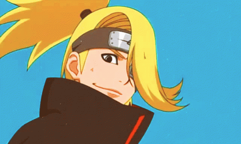
Seus poderes incluíem criar bocas especiais em suas mãos e peito, com sua argila explosiva que podia ser moldada como quisesse, explosivos para ataques à distância, clones de si mesmo e criação de aves para transporte.
-
HIDAN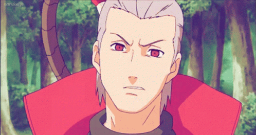
Sádico, sentia prazer em matar da forma mais dolorosa que conseguisse imaginar, e via o assassinato como uma vocação religiosa. Com ares de insanidade, era extremamente rancoroso e vingativo.alcançou uma semi-imortalidade, resistindo a quaisquer tipos de ferimentos em batalhas.
-
KAKUZU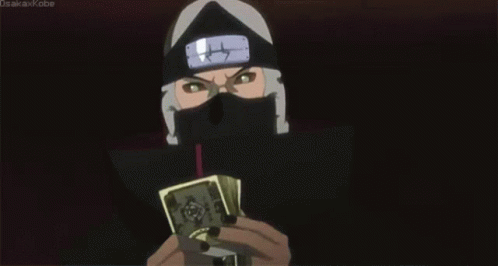
Extremamente ganancioso e violento, buscava sempre escolher suas missões de acordo com o maior ganho financeiro, era capaz de usar técnicas com os cinco elementos,roubava os corações de suas vitimas de forma individual.
-
TOBI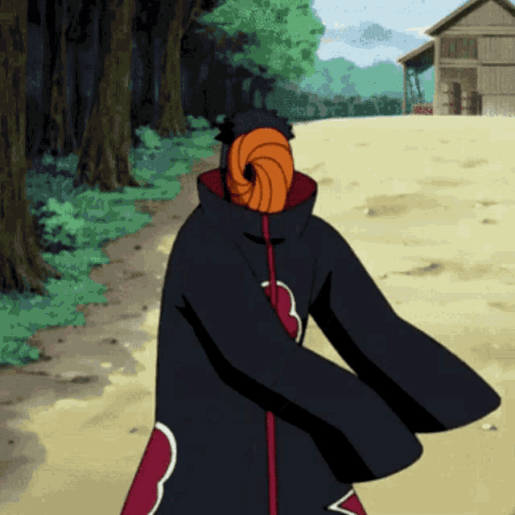
Um dos membros mais misteriosos da Akatsuki, ele cria uma espécie de entrada para um outro espaço dimensional, para onde pode se transportar.
-
ZETSU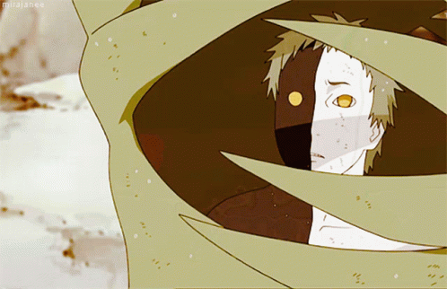
O Zetsu Branco é capaz de usar a Liberação de Madeira e o Zetsu Preto tem a habilidade de se ligar a outras pessoas, controlar seus corpos e, até mesmo, usar suas habilidades.